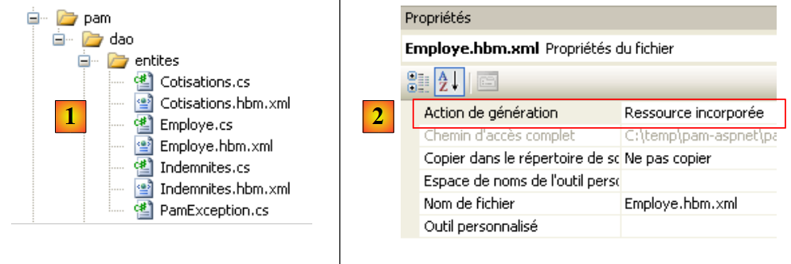
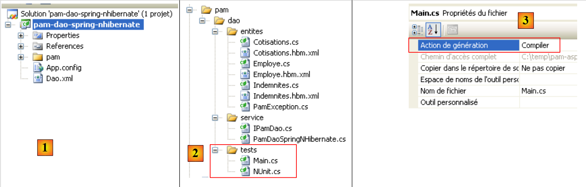
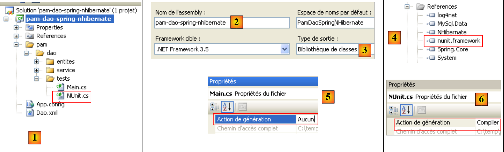
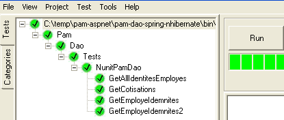
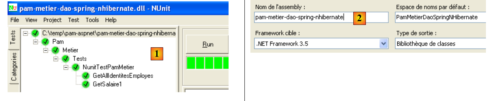
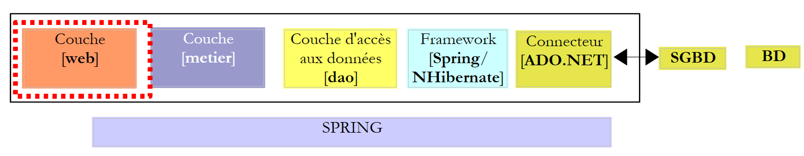

13. Die Anwendung [SimuPaie] – Version 9 – Spring-Integration / NHibernate
Wir schlagen hier vor, die dreischichtige Anwendung ASP.NET aus der Version 7 [pam-v7-3tier-nhibernate-multivues-multipages] zu übernehmen. Die Schichtenarchitektur der Anwendung sah wie folgt aus:
 |
In der obigen Darstellung war die Schicht [dao] mit dem Framework NHibernate implementiert worden. Das Spring-Framework wurde lediglich für die Integration der einzelnen Schichten untereinander verwendet. Das Spring-Framework bietet Hilfsklassen für die Arbeit mit dem Nhibernate-Framework. Durch die Verwendung dieser Klassen lässt sich der Code der Schicht [dao] einfacher schreiben. Die bisherige Architektur entwickelt sich wie folgt weiter:
 |
Aufgrund der verwendeten Schichtstruktur führt die Nutzung der Spring-/NHibernate-Integration lediglich zu einer Änderung der Schicht [dao]. Die Schichten [presentation] (Web / ASP.NET) und [metier] müssen nicht geändert werden. Darin liegt der Hauptvorteil der von Spring integrierten Schichtenarchitekturen.
Im Folgenden werden wir die Schicht [dao] zusammen mit [Spring / NHibernate] erstellen und dabei den Code einer funktionsfähigen Lösung erläutern. Wir werden nicht darauf eingehen, alle Konfigurations- oder Anwendungsmöglichkeiten des Frameworks [Spring / Nhibernate] aufzulisten. Der Leser kann die vorgeschlagene Lösung mithilfe der Dokumentation zu Spring.NET und [http://www.springframework.net/documentation.html] (Juni 2010) an seine eigenen Anforderungen anpassen.
Der zur Erstellung der Schichten [dao] und [metier] verfolgte Ansatz entspricht dem in Abschnitt 7 beschriebenen der Version 3. Der für die Schicht [présentation] verfolgte Ansatz entspricht dem in Abschnitt 11 beschriebenen der Version 7.
13.1. Die Datenzugriffsebene [dao]
 |
13.1.1. Das Visual Studio C#-Projekt der Schicht [dao]
Das Visual Studio-Projekt der Schicht [dao] lautet wie folgt:
 |
- in [1], das gesamte Projekt
- Der Ordner [pam] enthält die Klassen des Projekts sowie die Konfiguration der Entitäten NHibernate
- Die Dateien [App.config] und [Dao.xml] konfigurieren das Spring-Framework / NHibernate. Wir werden den Inhalt dieser beiden Dateien beschreiben müssen.
- In [2] befinden sich die verschiedenen Klassen des Projekts
- Im Ordner [entites] finden wir die Entitäten NHibernate, die im Projekt [pam-dao-nhibernate] behandelt wurden
- Im Ordner [service] finden wir die Schnittstelle [IPamDao] und ihre Implementierung mit dem Spring-Framework / NHibernate [PamDaoSpringNHibernate]. Wir müssen diese neue Implementierung der Schnittstelle [IPamDao] schreiben
- Der Ordner [tests] enthält dieselben Tests wie das Projekt [pam-dao-nhibernate]. Sie testen dieselbe Schnittstelle [IPamdao].
- In [3] befinden sich die Projektverweise. Die Spring-Integration / NHibernate erfordert zwei neue Dateien: DLL, [Spring.Data] und [Spring.Data.NHibernate12]. Diese DLL sind im Framework Spring.Net verfügbar. Sie wurden dem Ordner [lib] der DLL [4] hinzugefügt:
 |
In den Referenzen [3] des Projekts finden sich die folgenden DLL:
- NHibernate: für die ORM NHibernate
- MySql.Data: der Treiber ADO.NET für SGBD MySQL
- Spring.Core: für das Spring-Framework, das die Integration der Schichten gewährleistet
- log4net: eine Protokollbibliothek
- nunit.framework: eine Bibliothek für Unit-Tests
- Spring.Data und Spring.Data.NHibernate12: gewährleisten die Unterstützung von Spring / NHibernate.
Diese Referenzen wurden aus dem Ordner [lib] [4] übernommen. Es ist darauf zu achten, dass bei allen diesen Referenzen die Eigenschaft „Lokale Kopie“ auf „True“ gesetzt ist. [5]:
13.1.2. Die Konfiguration des C#-Projekts
Das Projekt ist wie folgt konfiguriert:
 |
- In [1] lautet der Name der Projekt-Assembly [pam-dao-spring-nhibernate]. Dieser Name taucht in verschiedenen Konfigurationsdateien des Projekts auf.
13.1.3. Die Entitäten der Schicht [dao]
 |
Die für die Ebene [dao] erforderlichen Entitäten (Objekte) wurden im Ordner [entites] [1] des Projekts zusammengestellt. Es handelt sich dabei um die Entitäten des Projekts [pam-dao-nhibernate], mit einem Unterschied in den Konfigurationsdateien NHibernate. Nehmen wir zum Beispiel die Datei [Employe.hbm.xml]:
- In [2] ist die Datei so konfiguriert, dass sie in die Assembly des Projekts eingebunden wird
Ihr Inhalt lautet wie folgt:
<?xml version="1.0" encoding="utf-8" ?>
<hibernate-mapping xmlns="urn:nhibernate-mapping-2.2"
namespace="Pam.Dao.Entites" assembly="pam-dao-spring-nhibernate">
<class name="Employe" table="EMPLOYES">
<id name="Id" column="ID">
<generator class="native" />
</id>
<version name="Version" column="VERSION"/>
<property name="SS" column="SS" length="15" not-null="true" unique="true"/>
<property name="Nom" column="NOM" length="30" not-null="true"/>
<property name="Prenom" column="PRENOM" length="20" not-null="true"/>
<property name="Adresse" column="ADRESSE" length="50" not-null="true" />
<property name="Ville" column="VILLE" length="30" not-null="true"/>
<property name="CodePostal" column="CP" length="5" not-null="true"/>
<many-to-one name="Indemnites" column="INDEMNITE_ID" cascade="all" lazy="false"/>
</class>
</hibernate-mapping>
- Zeile 2: Das Attribut „assembly“ gibt an, dass die Datei [Employe.hbm.xml] in der Assembly [pam-dao-spring-nhibernate] zu finden ist
13.1.4. Spring-Konfiguration / NHibernate
Kehren wir zum Visual C#-Projekt zurück:
 |
- In [1] konfigurieren die Dateien [App.config] und [Dao.xml] die Spring-Integration / NHibernate
13.1.4.1. Die Datei [App.config]
Die Datei [App.config] lautet wie folgt:
<?xml version="1.0" encoding="utf-8" ?>
<configuration>
<!-- Konfigurationsabschnitte -->
<configSections>
<sectionGroup name="spring">
<section name="parsers" type="Spring.Context.Support.NamespaceParsersSectionHandler, Spring.Core" />
<section name="objects" type="Spring.Context.Support.DefaultSectionHandler, Spring.Core" />
<section name="context" type="Spring.Context.Support.ContextHandler, Spring.Core" />
</sectionGroup>
<section name="log4net" type="log4net.Config.Log4NetConfigurationSectionHandler,log4net" />
</configSections>
<!-- Spring-Konfiguration -->
<spring>
<parsers>
<parser type="Spring.Data.Config.DatabaseNamespaceParser, Spring.Data" />
</parsers>
<context>
<resource uri="Dao.xml" />
</context>
</spring>
<!-- Dieser Abschnitt enthält die log4net-Konfigurationseinstellungen -->
<!-- NOTE IMPORTANTE: Die Protokolle sind standardmäßig nicht aktiviert. Sie müssen programmgesteuert aktiviert werden
avec l'instruction log4net.Config.XmlConfigurator.Configure();
! -->
<log4net>
<appender name="ConsoleAppender" type="log4net.Appender.ConsoleAppender">
<layout type="log4net.Layout.PatternLayout">
<conversionPattern value="%-5level %logger - %message%newline" />
</layout>
</appender>
<!-- Standard-Protokollierungsstufe auf DEBUG setzen -->
<root>
<level value="DEBUG" />
<appender-ref ref="ConsoleAppender" />
</root>
<!-- Protokollierung für Spring einrichten. Die Logger-Namen in Spring entsprechen dem Namespace -->
<logger name="Spring">
<level value="INFO" />
</logger>
<logger name="Spring.Data">
<level value="DEBUG" />
</logger>
<logger name="NHibernate">
<level value="DEBUG" />
</logger>
</log4net>
</configuration>
Die oben genannte Datei [App.config] konfiguriert Spring (Zeilen 5–9, 15–22) und log4net (Zeile 10, Zeilen 28–53), jedoch nicht NHibernate. Die Spring-Objekte werden nicht in der Datei „[App.config]“, sondern in der Datei „[Dao.xml]“ (Zeile 20) konfiguriert. Die Spring-Konfiguration für „NHibernate“, die aus der Deklaration bestimmter Spring-Objekte besteht, ist daher in dieser Datei zu finden.
13.1.4.2. Die Datei [Dao.xml]
Die Datei [Dao.xml], die die von Spring verwalteten Objekte enthält, sieht wie folgt aus:
<?xml version="1.0" encoding="utf-8" ?>
<objects xmlns="http://www.springframework.net"
xmlns:db="http://www.springframework.net/database">
<!-- Wird von der Konfigurationsdatei des Hauptanwendungskontexts referenziert -->
<description>
Application Spring / NHibernate
</description>
<!-- Datenbank und NHibernate-Konfiguration -->
<db:provider id="DbProvider"
provider="MySql.Data.MySqlClient"
connectionString="Server=localhost;Database=dbpam_nhibernate;Uid=root;Pwd=;"/>
<object id="NHibernateSessionFactory" type="Spring.Data.NHibernate.LocalSessionFactoryObject, Spring.Data.NHibernate12">
<property name="DbProvider" ref="DbProvider"/>
<property name="MappingAssemblies">
<list>
<value>pam-dao-spring-nhibernate</value>
</list>
</property>
<property name="HibernateProperties">
<dictionary>
<entry key="hibernate.dialect" value="NHibernate.Dialect.MySQLDialect"/>
<entry key="hibernate.show_sql" value="false"/>
</dictionary>
</property>
<property name="ExposeTransactionAwareSessionFactory" value="true" />
</object>
<!-- Transaktionsmanager -->
<object id="transactionManager"
type="Spring.Data.NHibernate.HibernateTransactionManager, Spring.Data.NHibernate12">
<property name="DbProvider" ref="DbProvider"/>
<property name="SessionFactory" ref="NHibernateSessionFactory"/>
</object>
<!-- Hibernate-Vorlage -->
<object id="HibernateTemplate" type="Spring.Data.NHibernate.Generic.HibernateTemplate">
<property name="SessionFactory" ref="NHibernateSessionFactory" />
<property name="TemplateFlushMode" value="Auto" />
<property name="CacheQueries" value="true" />
</object>
<!-- Datenzugriffsobjekte -->
<object id="pamdao" type="Pam.Dao.Service.PamDaoSpringNHibernate, pam-dao-spring-nhibernate" init-method="init" destroy-method="destroy">
<property name="HibernateTemplate" ref="HibernateTemplate"/>
</object>
</objects>
- Die Zeilen 11–13 konfigurieren die Verbindung zur Datenbank [dbpam_nhibernate]. Dort findet man:
- den für die Verbindung erforderlichen Provider ADO.NET, in diesem Fall den Provider von SGBD MySQL. Dies setzt voraus, dass sich DLL und [Mysql.Data] in den Projektverweisen befinden.
- die Verbindungszeichenfolge zur Datenbank (Server, Name der Datenbank, Eigentümer der Verbindung, dessen Passwort)
- Die Zeilen 15–29 konfigurieren das Objekt SessionFactory von NHibernate, das dazu dient, NHibernate-Sitzungen zu erhalten. Es sei daran erinnert, dass jeder Vorgang in der Datenbank innerhalb einer NHibernate-Sitzung erfolgt. In Zeile 15 ist zu sehen, dass SessionFactory durch die Spring-Klasse Spring.Data.NHibernate.LocalSessionFactoryObject implementiert wird, die sich in DLL Spring.Data.NHibernate12 befindet.
- Zeile 16: Die Eigenschaft DbProvider legt die Parameter für die Datenbankverbindung fest (Provider ADO.NET und Verbindungszeichenfolge). Hier verweist diese Eigenschaft auf das Objekt DbProvider, das zuvor in den Zeilen 11–13 definiert wurde.
- Zeilen 17–20: Legen die Liste der Assemblies fest, die [*.hbm.xml]-Dateien enthalten, welche von NHibernate verwaltete Entitäten konfigurieren. Zeile 19 gibt an, dass diese Dateien in der Assembly des Projekts zu finden sind. Wir weisen darauf hin, dass dieser Name in den Eigenschaften des C#-Projekts zu finden ist. Wir weisen außerdem darauf hin, dass alle [*.hbm.xml]-Dateien so konfiguriert wurden, dass sie in die Assembly des Projekts eingebunden werden.
- Zeilen 22–27: Spezifische Eigenschaften von NHibernate.
- Zeile 24: Der verwendete Dialekt SQL entspricht dem von MySQL
- Zeile 25: Das von NHibernate ausgegebene SQL wird nicht in den Konsolenprotokollen angezeigt. Wird diese Eigenschaft auf true gesetzt, lassen sich die von NHibernate ausgegebenen Befehle SQL ermitteln. Dies kann beispielsweise dabei helfen, zu verstehen, warum eine Anwendung beim Zugriff auf die Datenbank langsam ist.
- Zeile 28: Die Eigenschaft ExposeTransactionAwareSessionFactory auf true bewirkt, dass Spring die Annotationen zur Transaktionsverwaltung verwaltet, die im C#-Code gefunden werden. Wir werden darauf zurückkommen, wenn wir die Klasse schreiben, die die Schicht [dao] implementiert.
- Die Zeilen 32–36 definieren den Transaktionsmanager. Auch hier handelt es sich bei diesem Manager um eine Spring-Klasse der Klasse DLL Spring.Data.NHibernate12. Dieser Manager benötigt die Verbindungsparameter zur Datenbank (Zeile 34) sowie die SessionFactory von NHibernate (Zeile 35).
- In den Zeilen 39–43 werden die Eigenschaften der Klasse HibernateTemplate definiert, bei der es sich ebenfalls um eine Spring-Klasse handelt. Diese Klasse wird als Hilfsklasse in der Klasse verwendet, die die Schicht [dao] implementiert. Sie erleichtert die Interaktion mit den Objekten NHibernate. Diese Klasse verfügt über bestimmte Eigenschaften, die initialisiert werden müssen:
- Zeile 40: SessionFactory von NHibernate
- Zeile 41: Die Eigenschaft TemplateFlushMode legt den Synchronisationsmodus des Persistenzkontexts NHibernate mit der Datenbank fest. Der Modus Auto bewirkt, dass eine Synchronisation stattfindet:
- am Ende einer Transaktion
- vor einer SELECT-Operation
- Zeile 42: Die Abfragen HQL (Hibernate Query Language) werden zwischengespeichert. Dies kann zu einer Leistungssteigerung führen.
- Die Zeilen 46–48 definieren die Implementierungsklasse der Schicht [dao]
- Zeile 46: Die Schicht [dao] wird durch die Klasse [PamdaoSpringNHibernate] der Klasse DLL [pam-dao-spring-nhibernate] implementiert. Nach der Instanziierung der Klasse wird die Methode init der Klasse sofort ausgeführt. Beim Schließen des Spring-Containers wird die Methode destroy der Klasse ausgeführt.
- Zeile 47: Die Klasse [PamDaoSpringNHibernate] verfügt über eine Eigenschaft HibernateTemplate, die mit der Eigenschaft HibernateTemplate aus Zeile 39 initialisiert wird.
13.1.5. Implementierung der Schicht [dao]
13.1.5.1. Das Grundgerüst der Implementierungsklasse
Die Schnittstelle [IPamDao] ist dieselbe wie im Projekt [pam-dao-nhibernate]:
using Pam.Dao.Entites;
namespace Pam.Dao.Service {
public interface IPamDao {
// Liste aller Mitarbeiteridentitäten
Employe[] GetAllIdentitesEmployes();
// ein bestimmter Mitarbeiter mit seinen Zulagen
Employe GetEmploye(string ss);
// Liste aller Beiträge
Cotisations GetCotisations();
}
}
- Zeile 1: Der Namensraum der Entitäten der Schicht [dao] wird importiert.
- Zeile 3: Die Ebene [dao] befindet sich im Namensraum [Pam.Dao.Service]. Elemente des Namensraums [Pam.Dao.Entites] können mehrfach angelegt werden. Elemente des Namensraums [Pam.Dao.Service] werden als Singleton angelegt. Dies war der Grund für die Wahl der Namen der Namensräume.
- Zeile 4: Die Schnittstelle heißt [IPamDao]. Sie definiert drei Methoden:
- Zeile 6: [GetAllIdentitesEmployes] gibt ein Array von Objekten des Typs [Employe] zurück, das die Liste der Tagesmütter in vereinfachter Form darstellt (Nachname, Vorname, SS).
- Zeile 8: [GetEmploye] gibt ein Objekt vom Typ [Employe] zurück: den Mitarbeiter, dessen Sozialversicherungsnummer als Parameter an die Methode übergeben wurde, zusammen mit den seinem Index zugeordneten Zulagen.
- Zeile 10: [GetCotisations] gibt das Objekt [Cotisations] zurück, das die Sätze der verschiedenen Sozialabgaben enthält, die vom Bruttolohn abzuziehen sind.
Das Grundgerüst der Implementierungsklasse dieser Schnittstelle mit Spring-Unterstützung / NHibernate könnte wie folgt aussehen:
using System;
using System.Collections;
using System.Collections.Generic;
using Pam.Dao.Entites;
using Spring.Data.NHibernate.Generic.Support;
using Spring.Transaction.Interceptor;
namespace Pam.Dao.Service {
public class PamDaoSpringNHibernate : HibernateDaoSupport, IPamDao {
// Private Felder
private Cotisations cotisations;
private Employe[] employes;
// Init
[Transaction(ReadOnly = true)]
public void init() {
...
}
// Objekt löschen
public void destroy() {
if (HibernateTemplate.SessionFactory != null) {
HibernateTemplate.SessionFactory.Close();
}
}
// Liste aller Mitarbeiteridentitäten
public Employe[] GetAllIdentitesEmployes() {
return employes;
}
// ein bestimmter Mitarbeiter mit seinen Zulagen
[Transaction(ReadOnly = true)]
public Employe GetEmploye(string ss) {
....
}
// Liste der Beiträge
public Cotisations GetCotisations() {
return cotisations;
}
}
}
- Zeile 9: Die Klasse [PamDaoSpringNHibernate] implementiert die Schnittstelle der Schicht [dao] [IPamDao] korrekt. Sie leitet sich zudem von der Spring-Klasse [HibernateDaoSupport] ab. Diese Klasse verfügt über eine Eigenschaft [HibernateTemplate], die durch die vorgenommene Spring-Konfiguration (Zeile 2 unten) initialisiert wird:
<object id="pamdao" type="Pam.Dao.Service.PamDaoSpringNHibernate, pam-dao-spring-nhibernate" init-method="init" destroy-method="destroy">
<property name="HibernateTemplate" ref="HibernateTemplate"/>
</object>
- In Zeile 1 oben ist zu sehen, dass die Definition des Objekts [pamdao] angibt, dass die Methoden init und destroy der Klasse [PamDaoSpringNHibernate] zu bestimmten Zeitpunkten ausgeführt werden müssen. Diese beiden Methoden sind in der Klasse in den Zeilen 16 und 21 vorhanden.
- Zeilen 15, 34: Annotationen, die bewirken, dass die annotierte Methode innerhalb einer Transaktion ausgeführt wird. Das Attribut ReadOnly=true gibt an, dass es sich um eine schreibgeschützte Transaktion handelt. Die Methode, die innerhalb der Transaktion ausgeführt wird, kann eine Ausnahme auslösen. In diesem Fall wird von Spring automatisch ein Abbruch der Transaktion (Rollback) veranlasst. Diese Annotation macht die Verwaltung einer Transaktion innerhalb der Methode überflüssig.
- Zeile 16: Die Methode init wird von Spring unmittelbar nach der Instanziierung der Klasse ausgeführt. Wir werden sehen, dass sie dazu dient, die privaten Felder in den Zeilen 11 und 12 zu initialisieren. Sie wird in einer Transaktion ausgeführt (Zeile 15).
- Die Methoden der Schnittstelle [IPamDao] werden in den Zeilen 28, 35 und 40 implementiert.
- Zeilen 28–30: Die Methode [GetAllIdentitesEmployes] gibt lediglich das durch die Methode init initialisierte Attribut der Zeile 12 zurück.
- Zeilen 40–42: Die Methode [GetCotisations] gibt lediglich das von der Methode init initialisierte Attribut der Zeile 11 zurück.
13.1.5.2. Nützliche Methoden der Klasse HibernateTemplate
Wir werden die folgenden Methoden der Klasse HibernateTemplate verwenden:
IList<T> Find<T>(string requete_hql) | führt die Abfrage HQL aus und gibt eine Liste von Objekten vom Typ T zurück |
IList<T> Find<T>(string requete_hql, object[]) | führt eine Abfrage HQL aus, die durch ? parametrisiert ist. Die Werte dieser Parameter werden durch das Objektarray bereitgestellt. |
IList<T> LoadAll<T>() | gibt alle Entitäten vom Typ T zurück |
Es gibt weitere nützliche Methoden, die wir hier nicht verwenden werden, mit denen sich Entitäten abrufen, speichern, aktualisieren und löschen lassen:
T Load<T>(object id) | fügt die Entität vom Typ T mit dem Primärschlüssel id in die Sitzung NHibernate ein. |
void SaveOrUpdate(object entité) | fügt das Objekt entité ein (INSERT) oder aktualisiert es (UPDATE), je nachdem, ob es einen Primärschlüssel (UPDATE) besitzt oder nicht (INSERT). Das Fehlen eines Primärschlüssels kann über das Attribut unsaved-values in der Konfigurationsdatei der Entität konfiguriert werden. Nach der Operation SaveOrUpdate befindet sich das Objekt entité in der Sitzung NHibernate. |
void Delete(object entité) | löscht das Objekt entité aus der Sitzung NHibernate. |
13.1.5.3. Implementierung der Methode „init“
Die Methode init der Klasse [PamDaoSpringNHibernate] ist per Konfiguration die Methode, die nach der Instanziierung der Klasse durch Spring ausgeführt wird. Ihr Zweck besteht darin, die vereinfachten Identitäten der Mitarbeiter (Nachname, Vorname, SS) und die Beitragssätze im lokalen Cache zu speichern. Der Code könnte wie folgt aussehen.
[Transaction(ReadOnly = true)]
public void init() {
try {
// die vereinfachte Mitarbeiterliste abrufen
IList<object[]> lignes = HibernateTemplate.Find<object[]>("select e.SS,e.Nom,e.Prenom from Employe e");
// man fügt sie in eine Tabelle ein
employes = new Employe[lignes.Count];
int i = 0;
foreach (object[] ligne in lignes) {
employes[i] = new Employe() { SS = ligne[0].ToString(), Nom = ligne[1].ToString(), Prenom = ligne[2].ToString() };
i++;
}
// die Beitragssätze werden in ein Objekt übertragen
cotisations = (HibernateTemplate.LoadAll<Cotisations>())[0];
} catch (Exception ex) {
// die Ausnahme wird umgewandelt
throw new PamException(string.Format("Erreur d'accès à la BD : [{0}]", ex.ToString()), 43);
}
}
- Zeile 5: Eine Abfrage HQL wird ausgeführt. Sie fragt die Felder SS, Nachname und Vorname aller Entitäten Employé ab. Sie gibt eine Liste von Objekten zurück. Hätte man den gesamten Mitarbeiter in der Form „select e from Employe e“ abgefragt, hätte man eine Liste von Objekten vom Typ Employe erhalten.
- Zeilen 7–12: Diese Objektliste wird in ein Array von Objekten vom Typ Employe kopiert.
- Zeile 14: Es wird die Liste aller Entitäten vom Typ Cotisations abgefragt. Da bekannt ist, dass diese Liste nur ein Element enthält, wird das erste Element der Liste abgerufen, um die Beitragssätze zu erhalten.
- Die Zeilen 7 und 14 initialisieren die beiden privaten Felder der Klasse.
13.1.5.4. Implementierung der Methode GetEmploye
Die Methode GetEmploye muss die Entität „Mitarbeiter“ mit einer bestimmten Nummer SS zurückgeben. Ihr Code könnte wie folgt lauten:
[Transaction(ReadOnly = true)]
public Employe GetEmploye(string ss) {
IList<Employe> employés = null;
try {
// Abfrage
employés = HibernateTemplate.Find<Employe>("select e from Employe e where e.SS=?", new object[]{ss});
} catch (Exception ex) {
// Die Ausnahme wird umgewandelt
throw new PamException(string.Format("Erreur d'accès à la BD lors de la demande de l'employé de n° ss [{0}] : [{1}]", ss, ex.ToString()), 41);
}
// Wurde ein Mitarbeiter eingestellt?
if (employés.Count == 0) {
// Die Tatsache wird gemeldet
throw new PamException(string.Format("L'employé de n° ss [{0}] n'existe pas", ss), 42);
} else {
return employés[0];
}
}
- Zeile 6: Ruft die Liste der Mitarbeiter mit einer bestimmten Nummer SS ab
- Zeile 12: Normalerweise sollte man, wenn der Mitarbeiter existiert, eine Liste mit einem Element erhalten
- Zeile 14: Ist dies nicht der Fall, wird eine Ausnahme ausgelöst
- Zeile 16: Ist dies der Fall, wird der erste Mitarbeiter der Liste zurückgegeben
13.1.5.5. Conclusion
Vergleicht man den Code der Schicht [dao] im Falle einer Verwendung
- des alleinigen Frameworks NHibernate
- des Spring-Frameworks / NHibernate
stellt man fest, dass die zweite Lösung es ermöglicht hat, einfacheren Code zu schreiben.
13.2. Tests der Schicht [dao]
13.2.1. Das Visual-Studio-Projekt
Das Visual-Studio-Projekt wurde bereits vorgestellt. Zur Erinnerung:
 |
- in [1], das gesamte Projekt
- in [2] die verschiedenen Klassen des Projekts. Der Ordner [tests] enthält einen Konsolentest [Main.cs] und einen Unit-Test [NUnit.cs].
- In [3] wird das Programm [Main.cs] kompiliert.
 |
- In [4] wird die Datei [NUnit.cs] nicht generiert.
- Das Projekt ist eine Konsolenanwendung. Die ausgeführte Klasse ist die in [5] angegebene Klasse, die Klasse der Datei [Main.cs].
13.2.2. Das Konsolen-Testprogramm [Main.cs]
Das Testprogramm [Main.cs] wird in der folgenden Architektur ausgeführt:
 |
Es dient zum Testen der Methoden der Schnittstelle [IPamDao]. Ein einfaches Beispiel könnte wie folgt aussehen:
using System;
using Pam.Dao.Entites;
using Pam.Dao.Service;
using Spring.Context.Support;
namespace Pam.Dao.Tests {
public class MainPamDaoTests {
public static void Main() {
try {
// Instanziierung der Schicht [dao]
IPamDao pamDao = (IPamDao)ContextRegistry.GetContext().GetObject("pamdao");
// Liste der Mitarbeiteridentitäten
foreach (Employe Employe in pamDao.GetAllIdentitesEmployes()) {
Console.WriteLine(Employe.ToString());
}
// Ein Mitarbeiter mit seinen Zulagen
Console.WriteLine("------------------------------------");
Console.WriteLine(pamDao.GetEmploye("254104940426058"));
Console.WriteLine("------------------------------------");
// Liste der Beiträge
Cotisations cotisations = pamDao.GetCotisations();
Console.WriteLine(cotisations.ToString());
} catch (Exception ex) {
// Anzeige einer Ausnahme
Console.WriteLine(ex.ToString());
}
//Pause
Console.ReadLine();
}
}
}
- Zeile 11: Spring wird um eine Referenz auf die Schicht [dao] gebeten.
- Zeilen 13–15: Test der Methode [GetAllIdentitesEmployes] der Schnittstelle [IPamDao]
- Zeile 18: Test der Methode [GetEmploye] der Schnittstelle [IPamDao]
- Zeile 21: Test der Methode [GetCotisations] der Schnittstelle [IPamDao]
Spring, NHibernate und log4net werden durch die Datei [App.config] „ “ konfiguriert, die in Abschnitt 13.1.4.1 behandelt wurde.
Die Ausführung mit der in Abschnitt 6.2 beschriebenen Datenbank liefert die folgende Konsolenausgabe:
- Zeilen 1–2: die beiden Mitarbeiter vom Typ [Employe] mit den einzigen Informationen [SS, Nom, Prenom]
- Zeile 4: der Mitarbeiter vom Typ [Employe] mit der Sozialversicherungsnummer [254104940426058]
- Zeile 5: die Beitragssätze
13.2.3. Einzeltests mit NUnit
Wir fahren nun mit einem Unit-Test für NUnit fort. Das Visual Studio-Projekt der Schicht [dao] wird sich wie folgt weiterentwickeln:
 |
- zu [1], das Testprogramm [NUnit.cs]
- in [2,3], das Projekt generiert eine Datei mit dem Namen DLL, die als [pam-dao-spring-nhibernate.dll] bezeichnet wird
- in [4], der Verweis auf DLL aus dem Framework NUnit: [nunit.framework.dll]
- in [5], die Klasse [Main.cs] wird nicht in die DLL [pam-dao-spring-nhibernate]
- in [6] wird die Klasse [NUnit.cs] in die Klasse DLL [pam-dao-spring-nhibernate] aufgenommen
Die Testklasse NUnit lautet wie folgt:
using System.Collections;
using NUnit.Framework;
using Pam.Dao.Service;
using Pam.Dao.Entites;
using Spring.Objects.Factory.Xml;
using Spring.Core.IO;
using Spring.Context.Support;
namespace Pam.Dao.Tests {
[TestFixture]
public class NunitPamDao : AssertionHelper {
// die zu testende Schicht [dao]
private IPamDao pamDao = null;
// Konstruktor
public NunitPamDao() {
// Instanziierung der Schicht [dao]
pamDao = (IPamDao)ContextRegistry.GetContext().GetObject("pamdao");
}
// Initialisierung
[SetUp]
public void Init() {
}
[Test]
public void GetAllIdentitesEmployes() {
// Überprüfung der Mitarbeiterzahl
Expect(2, EqualTo(pamDao.GetAllIdentitesEmployes().Length));
}
[Test]
public void GetCotisations() {
// Prüfung des Beitragssatzes
Cotisations cotisations = pamDao.GetCotisations();
Expect(3.49, EqualTo(cotisations.CsgRds).Within(1E-06));
Expect(6.15, EqualTo(cotisations.Csgd).Within(1E-06));
Expect(9.39, EqualTo(cotisations.Secu).Within(1E-06));
Expect(7.88, EqualTo(cotisations.Retraite).Within(1E-06));
}
[Test]
public void GetEmployeIdemnites() {
// Überprüfung der Personen
Employe employe1 = pamDao.GetEmploye("254104940426058");
Employe employe2 = pamDao.GetEmploye("260124402111742");
Expect("Jouveinal", EqualTo(employe1.Nom));
Expect(2.1, EqualTo(employe1.Indemnites.BaseHeure).Within(1E-06));
Expect("Laverti", EqualTo(employe2.Nom));
Expect(1.93, EqualTo(employe2.Indemnites.BaseHeure).Within(1E-06));
}
[Test]
public void GetEmployeIdemnites2() {
// Prüfung nicht vorhandener Personen
bool erreur = false;
try {
Employe employe1 = pamDao.GetEmploye("xx");
} catch {
erreur = true;
}
Expect(erreur, True);
}
}
}
Diese Klasse wurde bereits in Abschnitt 7.3.4 behandelt.
Bei der Projektgenerierung werden die Dateien „DLL“ und „[pam-dao-spring-nhibernate.dll]“ im Ordner „[bin/Release]“ erstellt.
 |
Die Dateien DLL und [pam-dao-spring-nhibernate.dll] werden mit dem Tool [NUnit-Gui], Version 2.4.6, geladen und die Tests werden ausgeführt:
 |
Oben wurden die Tests erfolgreich durchgeführt.
Praktische Aufgabe:
Führen Sie die Tests der Klasse [PamDaoSpringNHibernate] auf dem Rechner durch.- Verwenden Sie verschiedene Konfigurationsdateien [Dao.xml], um andere SGBD (Firebird, MySQL, Postgres, SQL Server) zu nutzen
13.2.4. Generierung v aus der DLL der Schicht [dao]
Nachdem die Klasse [PamDaoNHibernate] geschrieben und getestet wurde, wird die Klasse DLL aus der Schicht [dao] wie folgt generiert:
 |
- [1], die Testprogramme werden vom Projekt-Assembly ausgeschlossen
- [2,3], Projektkonfiguration
- [4], Projektgenerierung
- DLL wird im Ordner [bin/Release] [5] generiert. Wir fügen sie zu den bereits im Ordner [lib] vorhandenen Dateien DLL und [6] hinzu:
 |
13.3. Die Fachschicht
Kommen wir noch einmal auf die allgemeine Architektur der Anwendung [SimuPaie] zurück:
 |
Wir gehen nun davon aus, dass die Schicht [dao] fertiggestellt und in die Schichten DLL und [pam-dao-spring-nhibernate.dll] gekapselt wurde. Wir wenden uns nun der Schicht [metier] zu. Diese implementiert die Geschäftsregeln, in diesem Fall die Regeln zur Gehaltsberechnung.
Das Visual Studio-Projekt der Geschäftssschicht könnte wie folgt aussehen:
 |
- in [1] das gesamte Projekt, das durch die Dateien [App.config] und [Dao.xml] konfiguriert wird. Die Datei [App.config] ist identisch mit der im Projekt der Geschäftsschicht enthaltenen Datei [dao] [pam-dao-spring-nhibernate]. Das Gleiche gilt für die Datei [Dao.xml], mit dem Unterschied, dass sie ein zusätzliches Spring-Objekt mit der ID pammetier deklariert. Die Deklaration dieses Objekts ist identisch mit der in der Datei [App.config] des Projekts [pam-metier-dao-nhibernate].
- In [2] ist der Ordner [pam] identisch mit dem, was er in der Ebene [metier] des Projekts [pam-metier-dao-nhibernate] war
- in [3] die vom Projekt verwendeten Referenzen. Zu beachten ist die DLL [pam-dao-spring-nhibernate] aus der zuvor untersuchten Ebene [dao].
Aufgabe: Erstellen Sie das oben genannte Projekt [pam-metier-dao-spring-nhibernate]. Es wird separat getestet:
-
im Konsolenmodus durch das Konsolenprogramm [Main.cs]
-
durch den Unit-Test [NUnit.cs], der vom Framework NUnit ausgeführt wird
Das neue Projekt [pam-metier-dao-spring-nhibernate] kann erstellt werden, indem man das Projekt [pam-metier-dao-nhibernate] einfach kopiert und anschließend die Elemente anpasst, die geändert werden müssen.
Nach den Tests wird die DLL aus der Schicht [metier] generiert, die wir [pam-metier-dao-spring-nhibernate] nennen werden:
 |
- in [1], der Test NUnit erfolgreich
- in [2], die vom Projekt generierte DLL
Die Datei DLL aus der Ebene [metier] wird zu den bereits im Ordner vorhandenen Dateien DLL hinzugefügt [lib] [3]:
 |
13.4. Die Ebene [web]
Kommen wir noch einmal auf die allgemeine Architektur der Anwendung [SimuPaie] zurück:
 |
Wir gehen davon aus, dass die Schichten [dao] und [métier] bereits fertiggestellt und in den Schichten DLL und [pam-dao-spring-nhibernate, pam-metier-dao-spring-nhibernate] gekapselt sind. Wir beschreiben nun die Webschicht.
Das Visual Web Developer-Projekt der Schicht [web] wird zunächst durch einfaches Kopieren des Ordners des Webprojekts [pam-v7-3tier-nhibernate-multivues-multipages] erstellt. Das Projekt wird anschließend in [pam-v9-3tier-spring-nhibernate-multivues-multipages] umbenannt:
 |
Das neue Webprojekt [pam-v9-3tier-spring-nhibernate-multivues-multipages] unterscheidet sich vom Projekt [pam-v7-3tier-nhibernate-multivues-multipages] in folgenden Punkten:
- In [1] wird es durch die Dateien [Dao.xml] und [Web.config] konfiguriert. [Dao.xml] existierte in [pam-v7] nicht, und die Datei [Web.config] muss die Spring-Konfiguration / NHibernate enthalten, während in [pam-v7] nur NHibernate konfiguriert wurde.
- In [2] sind die DLL der Schichten [dao] und [metier] diejenigen, die wir gerade erstellt haben.
Die Datei [Dao.xml] ist diejenige, die bei der Erstellung der Ebene [metier] verwendet wurde. Die Datei [Web.config] ist diejenige von [pam-v7], zu der die Spring-Konfiguration / NHibernate hinzugefügt wird, die in den Dateien [App.config] der Schichten [dao] und [metier] enthalten war. Die Datei [Web.config] aus [pam-v9] lautet wie folgt:
<configuration>
<configSections>
<sectionGroup name="system.web.extensions" type="System.Web.Configuration.SystemWebExtensionsSectionGroup, System.Web.Extensions, Version=3.5.0.0, Culture=neutral, PublicKeyToken=31BF3856AD364E35">
........
</sectionGroup>
<sectionGroup name="spring">
<section name="parsers" type="Spring.Context.Support.NamespaceParsersSectionHandler, Spring.Core" />
<section name="objects" type="Spring.Context.Support.DefaultSectionHandler, Spring.Core" />
<section name="context" type="Spring.Context.Support.ContextHandler, Spring.Core" />
</sectionGroup>
<section name="log4net" type="log4net.Config.Log4NetConfigurationSectionHandler,log4net" />
</configSections>
<!-- Spring-Konfiguration -->
<spring>
<parsers>
<parser type="Spring.Data.Config.DatabaseNamespaceParser, Spring.Data" />
</parsers>
<context>
<resource uri="~/Dao.xml" />
</context>
</spring>
............. le reste est identique au fichier [Web.config] de [pam-v7]
In den Zeilen 7–11 und 16–23 findet sich die Spring-Konfiguration wieder, die wir in den Dateien [App.config] der zuvor erstellten Ebenen [dao] und [metier] hatten, mit einem Unterschied: In den Dateien [App.config] lautete Zeile 17 wie folgt:
<resource uri="Dao.xml" />
Mit folgender Konfiguration:
 |
wird die Datei [Dao.xml] in den Ordner [bin] des Webprojektordners kopiert. Mit der Syntax
<resource uri="Dao.xml" />
wird die Datei [Dao.xml] im aktuellen Verzeichnis des Prozesses gesucht, der die Webanwendung ausführt. Es stellt sich jedoch heraus, dass dieses Verzeichnis nicht das Verzeichnis [bin] des ausgeführten Webprojektordners ist. Man muss schreiben:
<resource uri="~/Dao.xml" />
damit die Datei „[Dao.xml]“ im Ordner „[bin]“ des Ordners des ausgeführten Webprojekts gesucht wird.
Aufgabe: Diese Webanwendung auf einem Rechner implementieren.
13.5. Conclusion
Wir sind von folgender Architektur umgestiegen:
 |
zur Architektur:
 |
Es ging darum, die Schicht [dao] zu implementieren und dabei die Möglichkeiten zu nutzen, die sich durch die Integration von NHibernate durch Spring ergeben.
Wir konnten feststellen, dass dies:
- Auswirkungen auf die Schicht [dao] hatte. Diese war einfacher zu programmieren, erforderte jedoch eine komplexere Spring-Konfiguration.
- die Schichten [metier] und [web] geringfügig beeinflusste
Dies war ein weiteres Beispiel für den Nutzen von Schichtenarchitekturen.